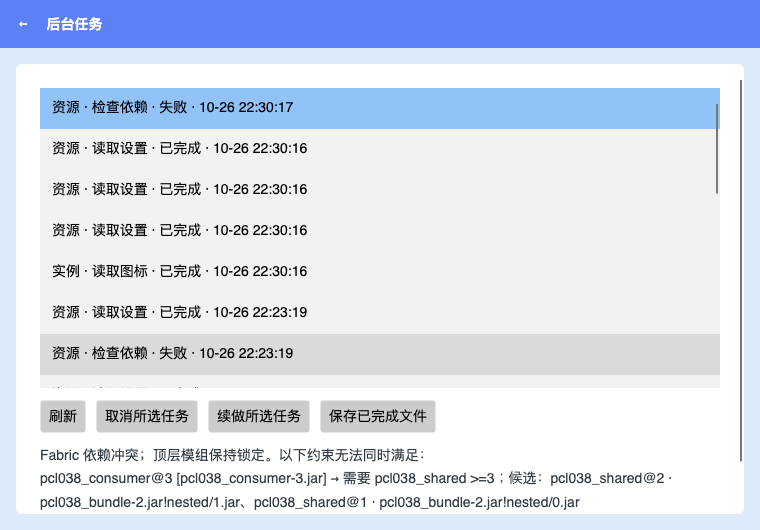

Fabric nested-JAR resolution, structured conflict details, real Apple Silicon installation and gameplay.
| Evidence | Scope |
|---|---|
| 47 focused assertions | 15 cases compared with the original signed Fabric Loader 0.19.5; three installation entry points and failure protection |
| 24 + 63 + 22 targeted checks | Existing planning, compatibility and Iris dependency protection |
| 5 real UI / 4 Host restart checks | Conflict display, task history, launch preflight and receipt recovery |
| Real resource installations | Continuity / Fabric API single, batch and controlled-pack final file hashes match |
| Two real game sessions | First exit code 0; 37 save files unchanged before reopening; detached game survives Host exit; user confirmed visuals, marker and position |

Hard constraints only; exact optional soft-weight optimization, complete Quilt overrides and arbitrary third-party packs remain outside verified scope. All 132 matrix rows keep their status categories. Microsoft login and online skins were not retested; default OAuth is empty. Ad-hoc signed, not notarized; private source.
Nested tests / First game / Independent reopen / User confirmation / Binary identity